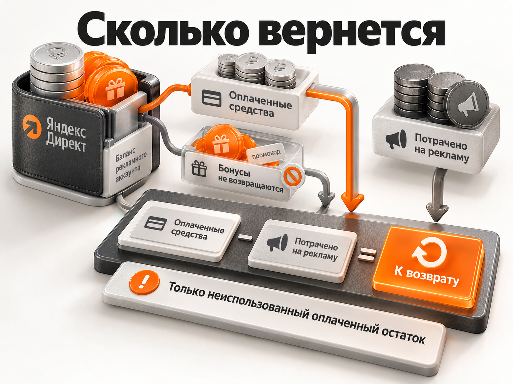
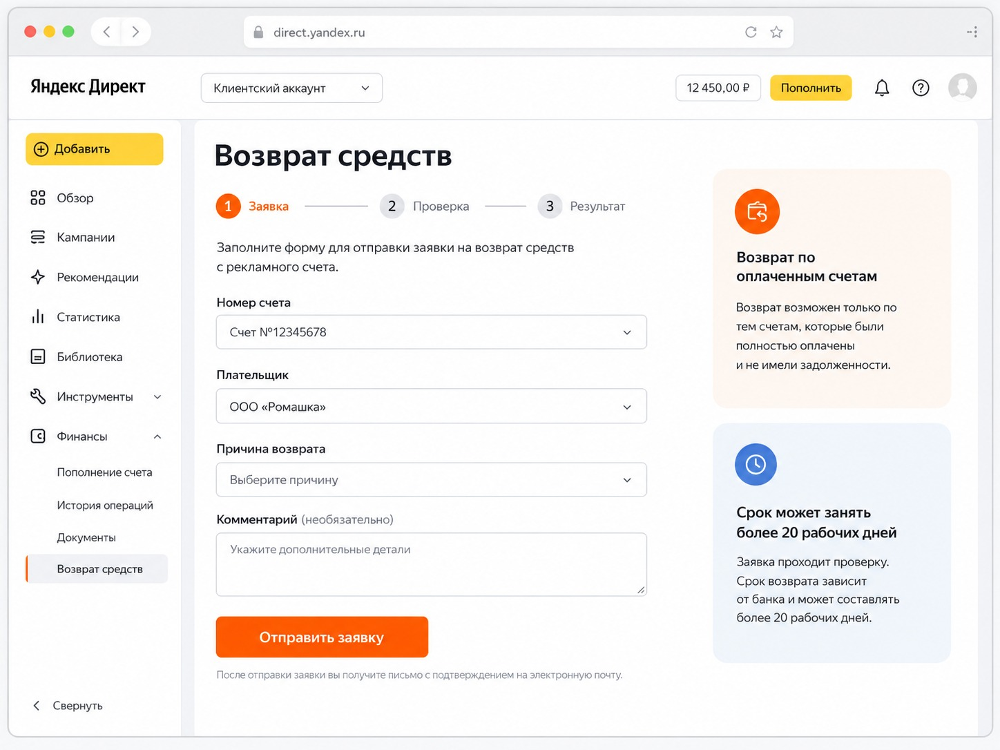
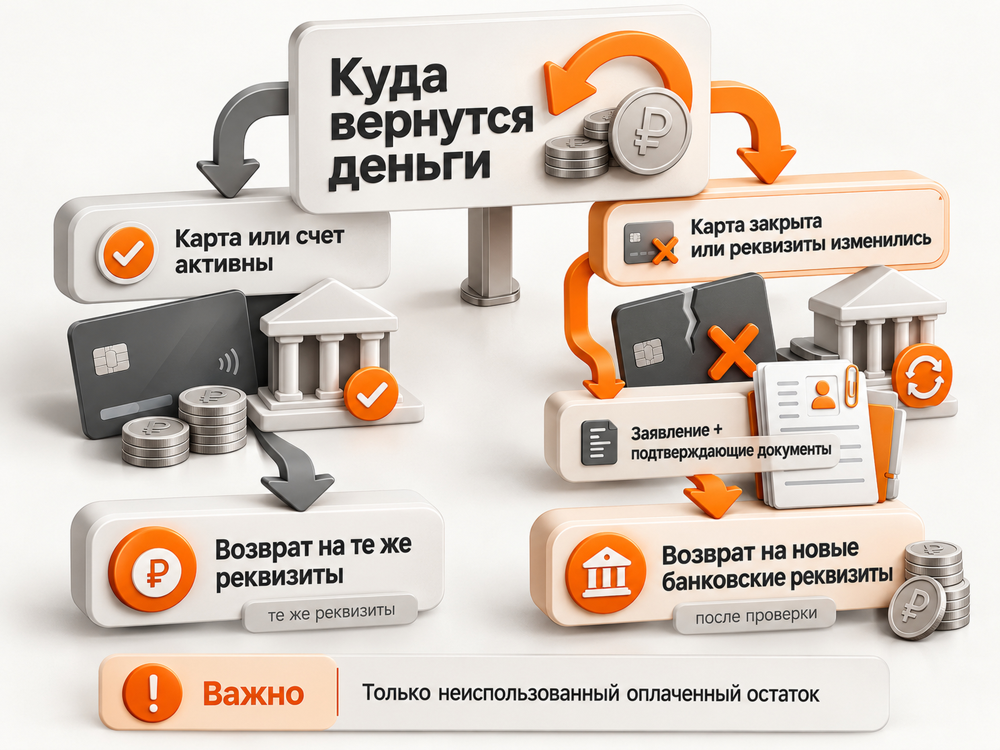

Блог о платном трафике
Как вернуть деньги с Яндекс Директа и вывести остаток со счета
Да, неиспользованные деньги с Яндекс Директа можно вернуть после остановки рекламы, закрытия проекта или блокировки кабинета. Для этого нужно найти номера оплаченных счетов и подать заявку на возврат. Обычно средства перечисляют на ту же карту или банковские реквизиты, с которых оплачивалась реклама. Если доступ к аккаунту утрачен, данные счетов можно восстановить через клиентский сервис Яндекса.
Это не мгновенный вывод, как из кошелька: Яндекс возвращает именно остаток ранее внесенных денег. Бонусы и промокоды не обналичиваются. В отдельных случаях процедура занимает более 20 рабочих дней.
Какие деньги можно вернуть из Яндекс Директа
Вернуть можно только фактически оплаченный и неиспользованный остаток. Средства, уже списанные за показы и клики, не возвращаются в рамках обычной процедуры возврата бюджета. Бонусы, начисленные по промокодам и акциям, также не выплачиваются деньгами.
Возврат оформляют по каждому оплаченному счету отдельно, поэтому цифра на общем балансе кабинета не всегда равна сумме, которую можно получить обратно. Сумма возврата включает ранее уплаченный НДС.
Как определить сумму возврата, если были бонусы
Если бонусов не было, расчет понятен: внесенные и еще не потраченные оплаченные средства доступны для возврата. Например, если рекламодатель оплатил 10 000 ₽, включая НДС, и на рекламу из этой суммы потрачено 4000 ₽, неиспользованный оплаченный остаток составит 6000 ₽. Это условный пример без бонусов и при сопоставлении сумм в одинаковом учете НДС.
С бонусами нельзя просто вычесть расходы на рекламу из суммы пополнений: Яндекс учитывает расходование оплаченных и бонусных средств параллельно. Например, общий остаток 8000 ₽ не означает, что все 8000 ₽ можно вернуть, если часть остатка сформирована промокодами. По справке Яндекса, бонусные средства при возврате аннулируются, а возврат рассчитывается по оплаченным счетам. Если точная сумма неясна, сверьте счета и акты / УПД либо уточните ее у поддержки.

Как вернуть деньги с Яндекс Директа: пошаговая инструкция
В обычной ситуации достаточно остановить рекламу, найти оплаченные счета и оформить заявку. Прежде чем отправить ее, проверьте плательщика и реквизиты возврата: деньги перечисляются не на произвольную карту, а по правилам возврата исходной оплаты.
Шаг 1. Остановите рекламные кампании
Если кампании еще активны, остановите их, чтобы остаток не продолжал расходоваться. Подробно это разобрано в материале «Как остановить кампанию в Яндекс Директе».
Шаг 2. Найдите номера оплаченных счетов
Откройте в Директе «Платежи и документы», затем «Счета». Выпишите номера оплаченных счетов, по которым осталось что возвращать. Если платежей несколько, подготовьте информацию по каждому счету: Яндекс обрабатывает возврат отдельно по каждому из них.
Важно не путать номер рекламной кампании, номер общего счета и номер оплаченного счета. Последний нужен для заявки на возврат.
Шаг 3. Подайте официальную заявку
Оформите заявку через форму возврата средств в справке Яндекс Директа. Укажите плательщика, оплаченные счета, причину обращения и контактные сведения. Если нужно вернуть деньги на другие реквизиты, заранее отметьте это в форме и подготовьте документы.
После принятия заявки Яндекс снимает соответствующие средства с кампаний и готовит их к возврату. Поэтому баланс в кабинете может измениться еще до фактического поступления денег в банк.

Шаг 4. Предоставьте документы по запросу
Для физического лица подтверждение личности обязательно. Яндекс может запросить копию разворота паспорта с фотографией и, если реклама оплачивалась картой, ее цветные фотографии с двух сторон. По требованиям Яндекса видимыми оставляют только первые шесть и последние четыре цифры номера; CVV/CVC нужно закрыть. Документы направляйте только через официальные каналы Яндекса.
Для организаций возврат обычно оформляют по заявлению. В отдельных случаях Яндекс вправе запросить оригинал письма с подписями руководителя и главного бухгалтера и печатью. Если ИП работает без печати, в документах указывают ОГРНИП. Для заявлений юридических лиц может потребоваться точная сумма до копейки по закрытым актам или УПД.
| Кто оплачивал рекламу | Что проверить перед заявкой |
|---|---|
| Физическое лицо | Совпадение плательщика со счетом, паспорт, исходная карта, необходимые подтверждения |
| ИП | Реквизиты плательщика, оплаченные счета, заявление и дополнительные документы по запросу |
| Организация | Оплаченные счета, акты / УПД, точная сумма возврата, заявление и банковские реквизиты |
Можно ли вернуть деньги, если аккаунт Яндекс Директа заблокирован
Да, сама блокировка кабинета не означает, что оставшиеся оплаченные деньги нельзя вернуть. Восстановление рекламных кампаний и возврат неиспользованного бюджета - разные задачи. Если реклама не может продолжаться, можно заняться возвратом средств отдельно.
В частности, проблема может возникнуть после блокировки рекламных материалов или всего аккаунта из-за нарушений правил сервиса. Возможность возврата и необходимые действия зависят от данных оплаченных счетов и проверки плательщика, а не только от того, можете ли вы открывать интерфейс кампаний.
Как вернуть остаток без доступа к логину и счетам
Если вы не можете войти в Директ, обратитесь в клиентский сервис Яндекса и попросите помочь определить номера оплаченных счетов. По официальной инструкции специалистам могут потребоваться:
- Логин, на котором размещалась реклама.
- Номер одной из рекламных кампаний или номер общего счета.
- Номера двух-трех актов об оказанных услугах или УПД, если они сохранились.
- Данные плательщика, например ИНН.
Подготовьте документы об оплате и переписку, если они у вас есть. Когда поддержка поможет найти оплаченные счета, оформите обычную заявку на возврат. Не нужно создавать новый кабинет лишь для того, чтобы попытаться вывести остаток со старого.
Куда вернут деньги: на карту, расчетный счет или новые реквизиты
По умолчанию возврат идет тем же способом и на те же реквизиты, которыми оплачивали рекламу. При оплате банковской картой это обычно исходная карта, при банковском переводе - исходный расчетный счет.
Если карта, счет или кошелек уже не действуют, укажите это при подаче заявки. В форме Яндекса предусмотрен выбор возврата другим способом и загрузка заявления. Для физического лица в России при закрытой или заблокированной карте могут понадобиться подписанное заявление, паспорт и документ банка о закрытии или блокировке карты; новые банковские реквизиты указывают в заявлении.
Изменение реквизитов требует дополнительной проверки. Просто указать любую чужую карту вместо исходного способа оплаты недостаточно.

Почему деньги исчезли с баланса после заявки на возврат
После принятия заявки Яндекс может снять средства с рекламных кампаний и подготовить их к возврату. Поэтому уменьшение баланса само по себе не означает, что деньги потрачены или потеряны. В официальной справке по вопросам оплаты отдельно упоминается ситуация, когда деньги заблокированы или возвращены после поступления заявки.
Если сумма исчезла с баланса, но не пришла на карту или счет, проверьте электронную почту, указанную при оформлении обращения, и статус заявки у поддержки. Не подавайте повторную заявку по тем же счетам, не выяснив судьбу первой.
Сколько времени занимает возврат средств
Яндекс предупреждает, что в некоторых случаях возврат занимает более 20 рабочих дней. Это не обещание перечислить деньги ровно за 20 дней и не гарантированный максимальный срок.
Процесс может затянуться, когда нужно подтвердить личность, уточнить оплаченные счета, проверить новое платежное направление или запросить документы. Если возврат долго не поступает, обратитесь в клиентский сервис с номером заявки, оплаченными счетами и сведениями о плательщике.
Можно ли перевести деньги на другой аккаунт Яндекс Директа
Перенос остатка напрямую на другой логин не предусмотрен как обычный способ возврата. Если проект переехал в другой рекламный кабинет, сначала оформите возврат неиспользованных оплаченных средств со старого аккаунта, затем пополните новый. Бонусы и промокоды в денежном эквиваленте не переводятся.
Частые вопросы о возврате
Возвращается ли НДС?
Да. По официальной справке Директа сумма возврата включает уплаченный НДС. При сверке цифр учитывайте, что в разных документах и отчетах суммы могут показываться с НДС и без него.
Можно ли получить деньги, если за рекламу платил другой человек или компания?
Заявку оформляют по данным фактического плательщика оплаченного счета. Для физлиц Яндекс прямо предусматривает возврат по тем счетам, где заявитель указан как плательщик. Если получать средства должен другой человек, потребуются дополнительные подтверждения, указанные Яндексом.
Нужно ли полностью удалять рекламный кабинет для возврата?
Нет. Официальный порядок предполагает остановку активных кампаний и подачу заявки, а не удаление аккаунта. Вернуть оплаченный неиспользованный остаток можно и без закрытия логина.
Коротко: как вернуть остаток с Директа
Остановите рекламу, найдите оплаченные счета в разделе «Платежи и документы», подайте заявку на возврат и при необходимости подтвердите личность или реквизиты. Если кабинет заблокирован либо нет доступа к логину, сначала получите номера счетов через поддержку Яндекса. Вернут только неиспользованные оплаченные средства, а бонусы аннулируются. Деньги обычно поступают на исходные платежные реквизиты; срок иногда превышает 20 рабочих дней.